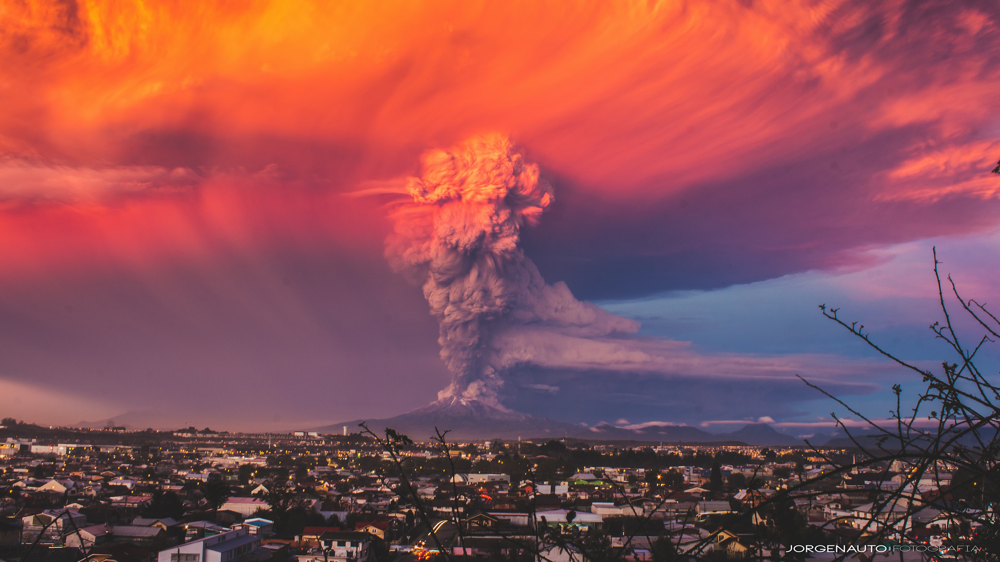

VULKANIZEM V ITALIJI
VEZUV

Vezuv je vulkan, ki leži vzhodno od Naplja in je visok 1279 metrov. Prvi izbruh je doživel pred 25.000 leti, njegov najbolj znan izbruh pa je bil leta 79 našega štetja. Takrat je njegov pepel zasul celotne Pompeje in ubil okrog 2000 ljudi. V mestu je sicer živelo okrog 20.000 ljudi in se jih je veliko pred izbruhom že odselilo vendar ostalih 2000 ljudi očitno ni slutilo ničesar, zato so vsi, ki so bili v času izbruha v Pompejih, umrli. Zadnji izbruh je bil na Vezuvu leta 1944. Res je, da že dolgo ni bruhal vendar znanstveniki ugotavljajo, da se magma počasi približuje površju.